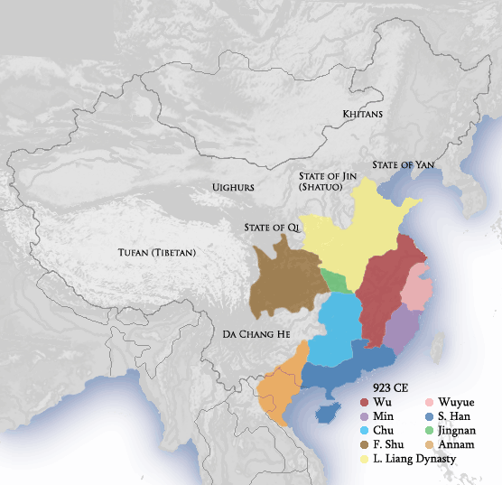
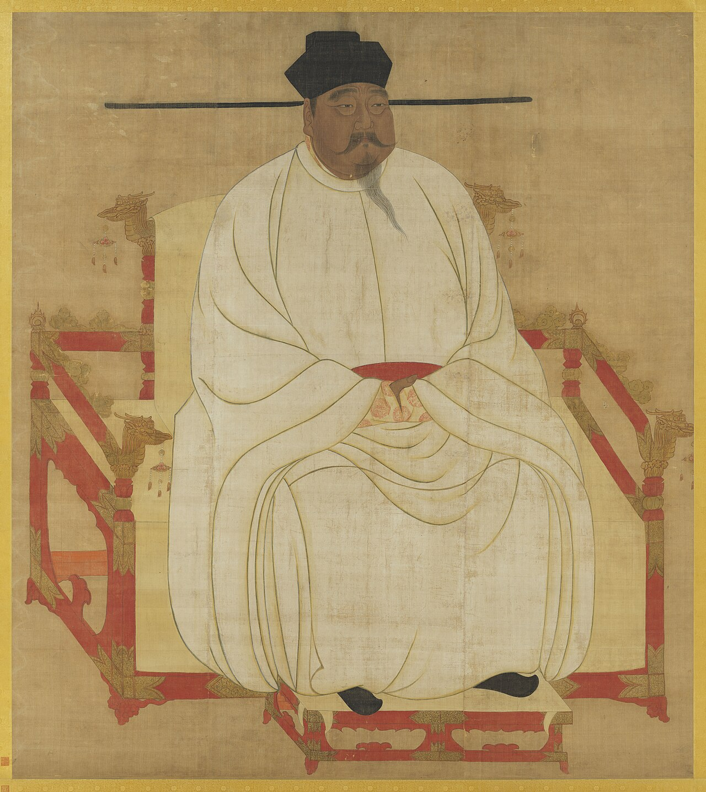
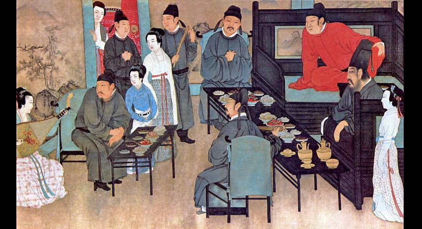

Song controlled a large Chinese population, but not every Chinese-speaking region.
Khitan Liao held territory to the northeast, including the Beijing region.
Tangut Xia controlled territory to the northwest.
These neighboring states had rulers, governments, and military power of their own.
Songcapital: Kaifeng
Liaopeople: Khitan
Xiapeople: Tangut
Source: Ebrey, A History of China, ch. 8, pp. 129–131; Map 8.1, p. 131.
Before Song · 907–960
Generals Made and Unmade Five Dynasties in Fifty-Three Years
After the Tang fell in 907, five short dynasties rose and fell in the north.
Each one was founded by a general with an army behind him.
In the south, about ten smaller kingdoms ruled at the same time.
Whoever commanded the troops could seize the throne.

Map · Five Dynasties and Ten Kingdoms, 923
Five Dynasties and Ten Kingdoms, 923 CE. Modern map by Ian Kiu, Wikimedia Commons, CC BY 3.0.
×
Five Dynasties and Ten Kingdoms
The name historians give to 907–960. "Five Dynasties" means the five regimes that followed one another in the north (Later Liang, Later Tang, Later Jin, Later Han, Later Zhou). "Ten Kingdoms" means the regional states, mostly in the south, that existed alongside them.
Source: Ebrey, A History of China, ch. 8, p. 130. Map: Wikimedia Commons, "Five Dynasties Ten Kingdoms 923 CE.png," CC BY 3.0.
The Chenqiao mutiny · 960
Soldiers Wrapped Their General in a Yellow Robe and Made Him Emperor

Portrait · Song Taizu
Song Taizu (Zhao Kuangyin, r. 960–976). Anonymous court portrait, hanging scroll. National Palace Museum, Taipei. Public domain, via Wikimedia Commons. An idealized official image, not a likeness from life.
In 960 the Later Zhou throne passed to a seven-year-old boy.
At Chenqiao, the army draped a yellow imperial robe on its commander, Zhao Kuangyin.
He became Taizu; he and his brother Taizong reunited the south by 979.
They expanded the civil service exams to staff the new state with scholars.
Source: Ebrey, A History of China, ch. 8, p. 130; Song shi (History of Song, 1345), Taizu annals.
The founding · 960
Taizu Put Generals Under Civilian Supervision
960 Zhao Kuangyin, later Emperor Taizu, founded Song.
→
The danger His troops had placed him on the throne.
→
The remedy He retired or rotated generals and assigned civilian officials to supervise them.
The goal was to prevent commanders from replacing the ruler.
Control the commanders to protect the dynasty.
Key term: warlord
×
Warlord
A commander whose military base lets him exercise political power with limited central control. After the Tang, rule by such commanders had fragmented China.
Source: Ebrey, A History of China, ch. 8, p. 130.
The northern frontier · Five Dynasties to early Song
Liao Held the Northern Defenses Song Wanted to Recover
Liao had acquired the Sixteen Prefectures during the Five Dynasties period.
The region included mountains, passes, and the line of the Great Wall.
Taizu and Taizong tried unsuccessfully to recover it.
A large population did not guarantee victory over Liao's mounted forces.
A strip of land in north China, the northern parts of modern Shanxi and Hebei, that had long been considered part of China proper. Liao gained control of it during the Five Dynasties period. A prefecture was an administrative territory.
Source: Ebrey, A History of China, ch. 8, p. 130.
Liao government · Review Question 2
Liao Used Different Institutions for Different Populations
Northern territories
Predominantly Khitan pastoral populations
Mobile court moved seasonally
Khitan social and military organization remained important
Southern territories
Large settled Chinese populations
Chinese-style civil bureaucracy
Examinations and agricultural tax revenue
One dynasty could govern different populations through different institutions.
Key term: sinification
×
Sinification
Adopting Chinese cultural practices and institutions. Adoption could be selective: a ruling group could borrow some Chinese methods while keeping its own language, customs, and organization.
Source: Ebrey, A History of China, ch. 8, pp. 130–131.
War with Liao · 1004
Song Bought Peace After Failing to Defeat Liao
1004A Liao invasion approached Kaifeng.
SettlementSong agreed to annual payments in exchange for peace.
ResultThe treaty preserved Song rule without recovering the disputed frontier.
100,000
ounces of silver each year
200,000
bolts of silk each year
The initial payments were 100,000 ounces of silver and 200,000 bolts of silk.
×
Bolt
A length of cloth. Silk was measured and paid in bolts.
Source: Ebrey, A History of China, ch. 8, p. 130.
The cost debate · early 1000s
Treaty Payments Cost Less Than Maintaining the Army
¾
By 1022, the military consumed about three-quarters of state tax revenues.
2–3%
Peaceful relations with Liao cost no more than about 2–3 percent of annual revenues.
Advocates of peace emphasized expense and stability.
Advocates of war emphasized lost territory and humiliation.
Xia controlled important horse-trading connections and developed its own script.
After unsuccessful fighting, Song accepted a treaty with Xia in 1044 and made payments.
Source: Ebrey, A History of China, ch. 8, p. 131.
Pause & Process · Review Question 1 · 5 minutes
Explain Song's Responses to Military Threats
How did the founders of the Song Dynasty resolve the threat of internal warlordism, and what unprecedented diplomatic strategies did they use to manage the Khitan Liao Empire to the north?
Write a brief response of 3–4 sentences.
Identify one measure used to control Song's commanders.
Identify one measure used to manage the Liao threat.
Explain why these different problems called for different responses.
2 min write on your own · 2 min compare with a partner: did you explain both the internal and the external threat? · 1 min share and revise one sentence.
Review Question 1, Chapter 8 reading guide; Ebrey, A History of China, ch. 8, p. 130.
The Jurchens · 1115
The Jurchens Founded Jin Before Northern Song Fell
Jurchen communities lived northeast of Song and challenged Liao authority.
Their economy combined hunting, fishing, animal husbandry, and farming.
Jin's rise changed the balance among Song, Liao, and Xia.
Source: Ebrey, A History of China, ch. 8, p. 138.
Diplomacy · early 1100s
Song Allied with Jin to Recover Its Northern Frontier
The goal Song still wanted to recover the Sixteen Prefectures.
→
The plan Song and Jin agreed to cooperate against Liao; the proposed division of Liao territory promised Song its disputed frontier.
→
The result Fighting revealed Song's military vulnerability to its new ally.
Source: Ebrey, A History of China, ch. 8, p. 138.
Kaifeng · 1115–1127
Jin's Attack on Kaifeng Ended Northern Song in 1127
1115Aguda proclaims the Jin Dynasty.
Liao fallsAfter defeating Liao, Jin attacked Song.
SiegeKaifeng was besieged; the court made enormous payments.
1127Members of the imperial family, including Huizong, were taken north as captives. The fall of the northern court ended Northern Song.
Northern Song ended; the Song Dynasty continued.
Source: Ebrey, A History of China, ch. 8, pp. 129, 138–139.
Jin government · after 1127
Jin Adopted Chinese Institutions to Govern Northern China
Inherited
Jin initially continued elements of Liao's dual administration.
Staffed
It employed former Liao officials, both Chinese and Khitan.
Expanded
Governing a much larger Chinese population encouraged wider use of Chinese institutions and officials.
Strengthened
Hereditary succession strengthened rulers in competition with their own nobles.
Source: Ebrey, A History of China, ch. 8, p. 138.
Jin rulers · borrowing and identity
Jin Rulers Combined Institutional Borrowing with Jurchen Authority
Institutions adopted
Chinese language, customs, and institutions spread among Jurchens.
Later rulers claimed the Chinese classics and the “Central Kingdom” as their own.
Authority and identity maintained
Some rulers promoted Jurchen-language schools, translations, and examinations.
Jin emperors asserted authority over officials, including through corporal punishment.
×
Central Kingdom
The common Chinese term for China. When Jin rulers claimed it, they were saying their state need not be seen as a "border" people's country, but as a legitimate center of civilization.
Source: Ebrey, A History of China, ch. 8, p. 138.
Southern Song · 1127–1141
Song Survived by Reestablishing Its Court in the South
A son of Huizong escaped capture and became Emperor Gaozong in 1127.
The court retreated south under continuing Jin pressure.
Hangzhou became the Southern Song capital.
A peace treaty with Jin in 1141 required further payments of silk and silver.
Northern SongKaifeng
Southern SongHangzhou
Source: Ebrey, A History of China, ch. 8, p. 139; Map 8.2, p. 139.
Now step back · China among equals
Rival Empires Shared a Region Claimed by Multiple Rulers
1
Civilian control stabilized Song internally without eliminating external rivals.
2
Liao and Jin used Chinese institutions while preserving their own ruling authority.
3
Song's survival depended on adapting to a changing balance of power.
More than one ruler claimed imperial legitimacy.
Source: Ebrey, A History of China, ch. 8, pp. 130–131, 138–139, 147.
Pause & Process · Review Question 7 · 5 minutes
Explain Jin's Conquest and Government
Explain the collapse of the Northern Song and the subsequent rise of the Jurchen Jin Dynasty. How did the Jin adapt to ruling a large Chinese population while asserting their own political authority?
Chronology check: Jin was founded in 1115, before Northern Song fell in 1127.
Write a response of 3–5 sentences.
Explain how the Song–Jin alliance against Liao contributed to Northern Song's collapse.
Identify one institution or administrative practice Jin adopted.
Identify one way Jin maintained its own authority or identity.
2 min write on your own · 2 min compare with a partner: check the chronology and the difference between conquest and government · 1 min share an example and make a final correction.
Review Question 7, Chapter 8 reading guide; Ebrey, A History of China, ch. 8, p. 138.
Next: Lecture 2 · Agriculture and Trade Sustained Song Prosperity
Appendix · instructor use
Activity Response Criteria
Debrief guides for the two Pause & Process activities.
Appendix · Activity 1 · Review Question 1
What a satisfactory answer includes
A satisfactory response should explain that Taizu retired or rotated generals and placed them under civilian supervision to reduce the danger of military takeovers. Song's northern rivals presented a different problem: they were independent powers beyond its domestic chain of command. After unsuccessful warfare and a threatening Liao invasion, Song negotiated peace through annual payments. Stronger responses explain the competing considerations of security, cost, lost territory, and prestige.
Debrief correction: The policy restrained commanders; it did not eliminate the army. Peace payments did not mean that Liao directly governed Song.
A satisfactory response should place Jin's founding before the fall of Northern Song and connect the anti-Liao alliance with Jin's discovery of Song's military vulnerability. It should give an administrative example, such as retaining Liao officials, using Chinese-style institutions, or employing more Chinese officials. It should also give an authority or identity example, such as hereditary succession, Jurchen-language education, distinct treatment of officials, or claims to the Central Kingdom.
Debrief correction: Jin's conquest did not end the entire Song Dynasty. Using Chinese institutions did not make Jin rulers subjects of Song.
Today's lecture ends here. Continue on your own: the stories below finish this chapter's history.
"A little learning is a dang'rous thing; Drink deep, or taste not the Pierian spring." Alexander Pope, An Essay on Criticism (1711)
Pierian Spring · 961
Taizu Persuaded His Generals Over Wine to Give Up Their Commands
In 961, Taizu invited his top generals to a palace banquet.
He asked: what if your own troops put a yellow robe on you?
He offered land, wealth, and comfort if they gave up their commands. They agreed.
Historians call this bei jiu shi bing quan, and treat it as partly legendary.

Painting · a tenth-century banquet
Detail, Night Revels of Han Xizai, after Gu Hongzhong (10th c.); Song-dynasty copy, Palace Museum, Beijing. Public domain, via Wikimedia Commons. Shows a Southern Tang official's banquet, not Taizu's; used to suggest the setting.
×
Bei jiu shi bing quan 杯酒釋兵權
"A cup of wine to release military power." The famous phrase for Taizu's peaceful removal of his generals. The full scene first appears in accounts written decades later, so historians doubt the details while accepting that Taizu did retire his senior commanders.
Source: Li Tao, Xu Zizhi tongjian changbian (12th c.); Sima Guang, Sushui jiwen (11th c.); cf. Ebrey, ch. 8, p. 130. ← Back to Taizu's policy